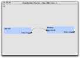
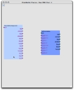
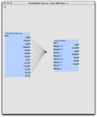

Chain creation is obviously the most important goal of the chainbuilder application. The first step in building a chain is pressing the chain canvas creation button in the module palette window. This will lead to the creation of a new window - the chain creation canvas. Initially, this window is almost blank, containing only the directions "Drag and drop chains and modules here. Connect them to build new chains." If desired, multiple chain canvases can operate concurrently.
|
|
| Fig 4-1: The button used to create a chain canvas. |
Dragging and dropping of chains and modules onto the chain canvas is straightforward. Simply move the mouse over the desired chain/module in the appropriate palette, press and hold the mouse button, move the pointer over the empty canvas, and release the pointer at the desired spot. A copy of the dragged chain or module will appear at that point on the canvas. Note that modules cannot be dragged individually from the chain palette: chains must be dragged as a whole. To put a single module on the canvas, use the module palette.

|
| Fig 4-2: A chain canvas with three modules that have been dropped. |

|
| Fig 4-3: A chain canvas with a chain dropped from the chain palette. |
Once the canvas is populated with one or more modules (as dropped individually, as part of a chain, or both), several interactions are possible.
Modules can be displayed in one of two ways, depending on the magnification level of the canvas. If the canvas is zoomed out, a basic view of the module is displayed, giving only its name and two connectors: one for inputs and one for outputs. When the display is zoomed in to focus on a smaller area, the view of the module will eventually change to show all inputs and outputs separately. These displays are similar to the detail and overviews of modules found in the module palette.
Once two or more modules are displayed on the canvas, and the magnification is increased to make their parameters visible, links between modules can be created. Mousing over a parameter on a module will cause that parameter to be highlighted in purple, along with all of the parameters that it can be linked to.

|
| Fig 4-4: Two modules on a chain canvas, with purple highlighting indicating parameters that might be connected via a link. |
To create a link, simply click on the desired starting parameter (either on the green square next to the parameter, or on the parameter text itself), move the mouse, and click on the parameter that is the end point. Links can start at either input or output parameters. If the mouse is pressed on a non-parameter location during the course of creating a link, a control point will be created, turning the link into a curve. To cancel a link in progress, double-click the mouse.
|  |
| Fig 4-5: Two modules on a chain canvas, with a single link connecting two parameters. |
Once created, links can be selected by clicking on them. This will change their endpoints (and any interior control points for curves) to be highlighted in white. Selected links can be deleted by pressing the delete key. For links that are curves, internal control points can be dragged to change the shape of the curve. Modules that have links can still be dragged as before: link endpoints will be updated as needed.
The representation of links between modules can change when the magnification level changes. As mentioned above, modules are drawn as overviews when the display is zoomed out to show a higher-level overview. When this happens, all of the links between any two modules are replaced with one single overview link. The individual parameter links can then be restored by zooming in to a detailed view.
In some cases, there may be many possible links between two modules. This can clearly be seen if the mouse is moved over the central part of one of the modules. In this case, all parameters that might be linked to other modules are highlighted, with similar highlights in the other module.
|  |
| Fig 4-6: Two modules on a chain canvas, with multiple highlighted parameters on each implying the possibility of multiple links. |
When this happens, the chainbuilder provides a shortcut that can be used to simplify the creation of multiple links. Simply double click on the side of the module that corresponds to the parameters that should be linked: left for inputs or right for outputs. This will lead to the creation of multiple links, one for each linkable parameter. Move the mouse to the appropriate side of the other node and double-click again, and the links will be created. As before, double-clicking on the canvas background will cancel the links.
|  |
| Fig 4-7: The creation of multiple links between modules. |
Once the chain is complete, it can be saved to the database. To save a chain, press the floppy disk icon in the upper-left corner of the chain canvas. Enter a name and (optional) description, and press save. The chain will be added to the database, and to the chain palette.
{kind=link}
{kind=link}
{kind=link}